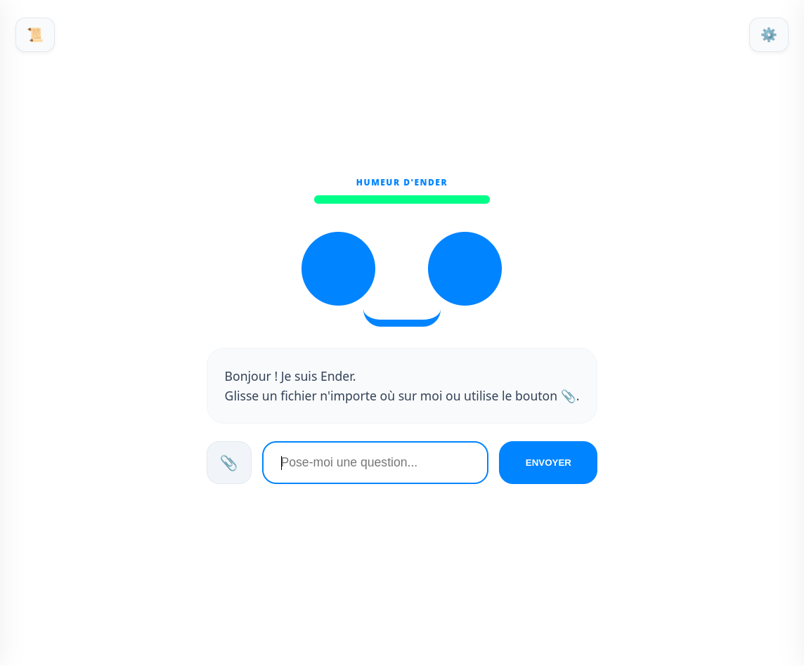

Ender AI
Ender AI est un assistant de bureau 100% local, multimodal et autonome. Conçu pour garantir une confidentialité absolue, il utilise une architecture "Triple Engine" pour voir, raisonner et ressentir. Ender prend vie via une interface dynamique aux expressions faciales synchronisées en temps réel.
Optimisé pour Python 3.12 & GPU RTX (VRAM 16GB).
Aperçu de l'interface

Capacités Neurales
Combine DeepSeek-R1 (Raisonnement), JoyCaption (Vision) et Llama 3 (Émotions) pour une intelligence complète.
Indexation locale de PDF/TXT par simple Drag & Drop et analyse de contenu web en temps réel.
Analyse de sentiment intégrée : Ender adapte son visage, son humeur et son ton selon vos interactions.
Génération audio rétro synchronisée avec les mouvements de bouche, inspirée de l'esthétique Nintendo.
Ender n'attend pas toujours vos ordres. Il peut relancer la conversation de lui-même après une inactivité.
Utilisation de modèles non censurés pour une IA sans limitations morales ou éthiques imposées.
Changelog du projet
Version 1.0.0 [Mars 2026]
Lancement Initial (Studio Edition)
- Architecture Backend FastAPI et Frontend PyWebView.
- Système de recherche sémantique (RAG) natif sans dépendance lourde.
- Web Scraper (BeautifulSoup) avec analyse de profondeur.
- Gestionnaire de VRAM intelligent (Hot-Reload) pour cartes graphiques.
- HUD dynamique avec boîte de pensée "Chain of Thought" visible.